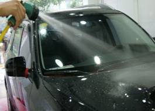
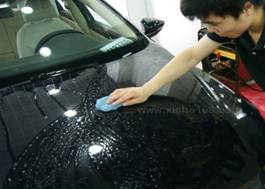
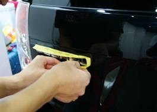
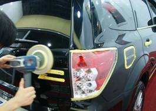

当前位置：首页 > 实训项目与考核 > 实训项目清单
项目流程
表8 汽车漆面镀膜的流程
| 环节 | 项目 | 具体程序 | 操作目的及 注意事项 | 作业示意图 |
|---|---|---|---|---|
| 1 | 冲洗车辆 | 1）准备相关的清洗用品及工具设备。 2）检查车辆状况，如发现车身刮蹭或者划痕，需要及时告知车主。 3）将车驻停在清洗工位，确保施工安全，检查门窗状态及重点清洗部位。 |
操作目的： 1）冲净车身表面 |
 |
| 2 | 粘土清洁 | 1）将初步清洗的车身再次用粘土进行清洗 | 操作目的： 1）去除车身表面不易清洗的污渍 |
|
| 3 | 黏贴保护胶带 | 1）将车身缝隙部分黏贴上保护胶带 | 操作目的： 1）防止镀膜产品误入缝隙部位，不易清除 注意事项： 1）保护胶带需要覆盖所有的工作部位 |
 |
| 4 | 进行还原处理 | 使用抛光机中低速运转，对车身进行抛光还原处理 采用还原剂对车身进行还原处理 |
操作目的： 1）提高车漆光亮程度 2）去除氧化层，治理漆面缺陷 |
 |
| 5 | 冲洗车身 | 1）用高压水枪冲洗车身 | 操作目的： 1）冲洗掉抛光和做镜面还原时飞起的粉尘，防止抛光效果打折扣 |
 |
| 6 | 车身镀膜 | 1）镀膜可以采用手工进行也可以采用机械工具进行，根据镀膜材料的不同进行选择。 | 注意事项： 镀膜需要均匀平整 |
|
| 7 | 清洗并验收 | 1）检验镀膜质量 | 注意事项： 1）从各个方位进行仔细观察，防止出现不平整的褶皱情况。 |
上一页 1 2 3 4 5 6 7 8 下一页